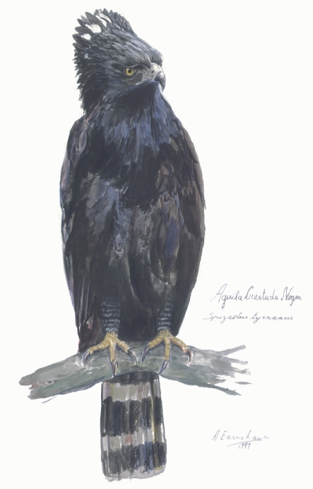

Aguila Crestuda NegraSpizaetus Tyrannuz [Black Hawk-Eagle]Pude observar esta especie en cautiverio, en la "Casa de las Ave" (Güirá Oga), próximo a Puerto Iguazú (Misiones, Arg.). A partir de las fotografías que tomé, realicé el siguiente cuadro. Técnica: Tinta China y Acuarela - Agosto 1999 El original fué donado a la Asociación Ornitológica del Plata (AOP) / Aves Argentinas en un sencillo acto durante la reunión "post-safari", el 12 de Agosto de 1999. En la Argentina habita solamente la provincia de Misiones. Si bien es muy escasa, es posible de observar en vuelo en espacios abiertos al borde de la selva. Para la Argentina esta especie es considerada "Rara o muy difícil de ver" (Narosky & Yzurieta). Para el Parque
Nacional Iguazú es considerada "Rara" (Saibene et al.), existiendo poquísimos
avistajes de la misma.
 VOLVER
A LA PAGINA PRINCIPAL DEL SAFARI A MISIONES |